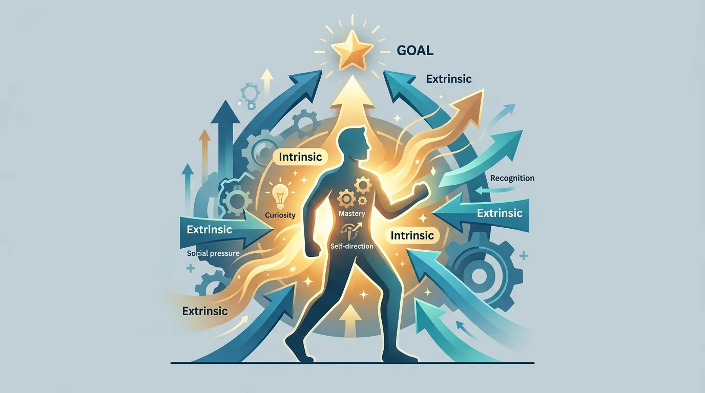
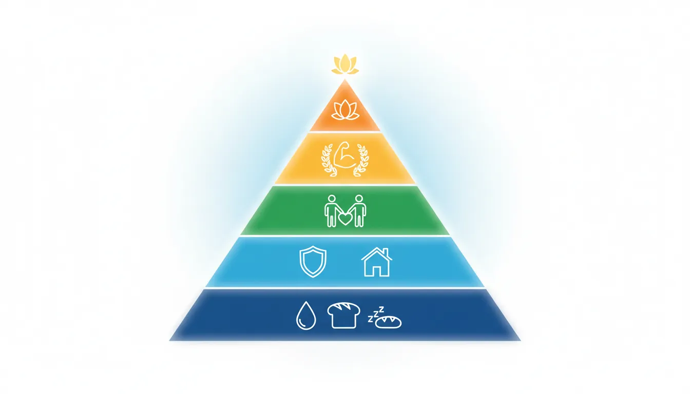
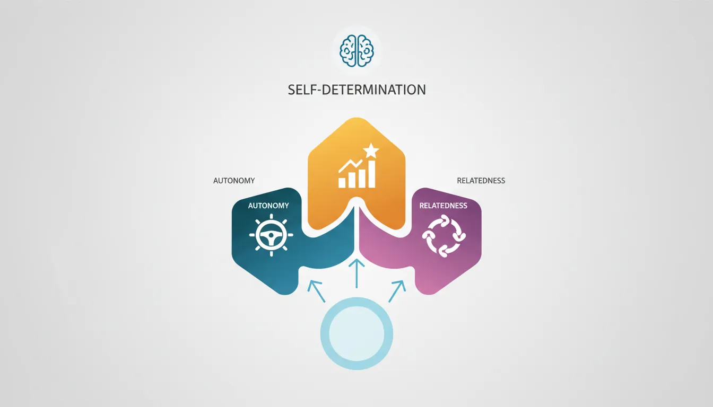
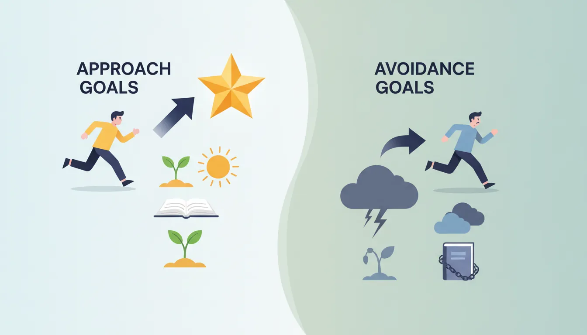
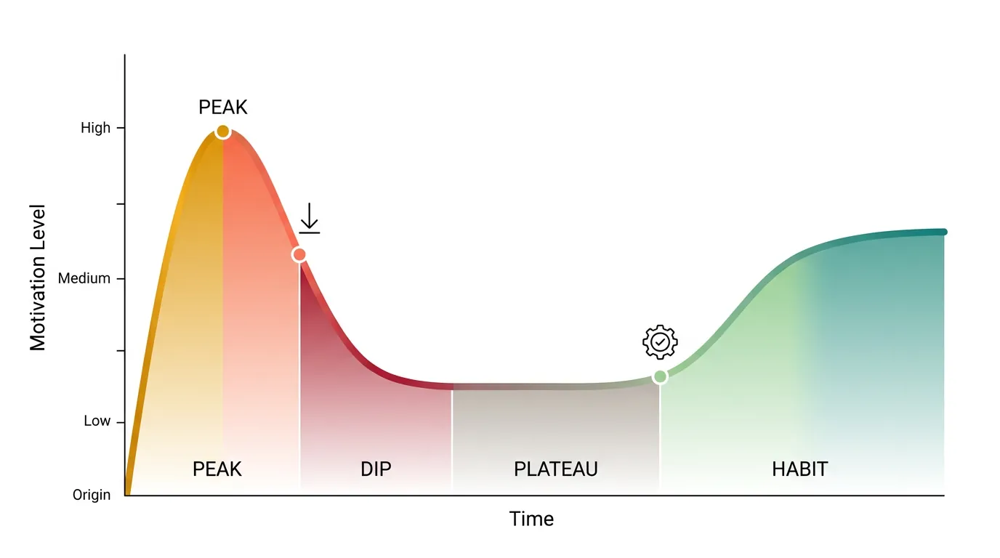

What Is Motivation?
Motivation is the internal and external force that initiates, guides, and sustains goal-oriented behavior. In this fourth part of our series, we dive deep into the psychology of drive.

Key Insight
Motivation is not a fixed trait—it's a dynamic process influenced by goals, rewards, autonomy, and meaning.
Behavioral Psychology Mastery
Foundations of Behavior
Core principles, conditioning, behavioral loopHabit Formation & Breaking
Habit loops, building & breaking habitsDecision-Making Psychology
Biases, dual-system thinking, behavioral economicsMotivation & Drive
Intrinsic vs extrinsic, theories, goal psychologyNudge Theory & Choice Architecture
Defaults, framing, behavioral designBehavior Change Models
COM-B, Fogg, transtheoretical modelSocial Influence & Persuasion
Conformity, authority, Cialdini's principlesPractical Applications
Personal, workplace, business, healthBehavioral Neuroscience Basics
Dopamine, stress, habit circuitryBehavioral Research Methods
Experiments, RCTs, field studiesApplied Behavioral Therapy
CBT, exposure therapy, reinforcementIntrinsic vs Extrinsic Motivation
The Two Types of Motivation
| Intrinsic Motivation | Extrinsic Motivation |
|---|---|
| Doing for inherent satisfaction | Doing for external rewards |
| Curiosity, enjoyment, mastery | Money, grades, praise, avoiding punishment |
| Self-sustaining | Requires ongoing external input |
| "I want to" | "I have to" |
| Higher creativity, persistence | Can feel controlling |
The Overjustification Effect
Adding external rewards to intrinsically motivated activities can undermine the intrinsic motivation. Pay children for reading, and they may read less when payments stop. The external reward "overwrites" the internal satisfaction.
Classic Study: The Marker Drawing Experiment
Children who enjoyed drawing with markers were divided into three groups:
- Expected reward: Told they'd get a certificate for drawing
- Surprise reward: Got certificate unexpectedly
- No reward: Just drew
Result: Two weeks later, the "expected reward" group spent 50% less time drawing than before. The reward had undermined their intrinsic interest.
When Extrinsic Rewards Work
Extrinsic motivation isn't always bad. It works well when:
- The task is genuinely boring (assembly line work)
- The reward is unexpected
- The reward provides useful feedback (not just money)
- The reward supports autonomy rather than controlling behavior
Major Motivation Theories
Maslow's Hierarchy of Needs
Abraham Maslow proposed that needs are arranged in a hierarchy—lower needs must be satisfied before higher needs become motivating.

The Five Levels
| Level | Need | Examples |
|---|---|---|
| 5 (Top) | Self-Actualization | Creativity, purpose, personal growth |
| 4 | Esteem | Achievement, respect, recognition |
| 3 | Love/Belonging | Friendship, intimacy, community |
| 2 | Safety | Security, stability, health |
| 1 (Base) | Physiological | Food, water, sleep, shelter |
Modern critique: The strict hierarchy doesn't always hold—people do creative work while hungry, and social needs can be as urgent as physical ones.
Herzberg's Two-Factor Theory
Frederick Herzberg found that job satisfaction and dissatisfaction come from different factors—not opposites of the same dimension.
Hygiene vs Motivator Factors
| Hygiene Factors | Motivator Factors |
|---|---|
| Prevent dissatisfaction when adequate | Create satisfaction when present | |
| Salary, benefits | Achievement |
| Working conditions | Recognition |
| Job security | Meaningful work |
| Company policies | Responsibility |
| Relationship with supervisor | Growth opportunities |
Implication: Higher salary removes dissatisfaction but doesn't motivate. For motivation, provide meaningful work, recognition, and growth.
Self-Determination Theory
Edward Deci and Richard Ryan's Self-Determination Theory (SDT) is the most influential modern framework for understanding motivation. It identifies three universal psychological needs:

The Three Basic Psychological Needs
- Autonomy: Feeling in control of your actions and choices
- Competence: Feeling capable and effective at what you do
- Relatedness: Feeling connected to and valued by others
When these three needs are met, intrinsic motivation flourishes. When they're thwarted, motivation withers and well-being suffers.
Applying SDT at Work
| Need | Supports It | Undermines It |
|---|---|---|
| Autonomy | Choice in how to work, flexible hours, explaining "why" | Micromanagement, surveillance, controlling language |
| Competence | Clear feedback, skill-building, optimal challenge | Vague expectations, impossible tasks, no feedback |
| Relatedness | Team collaboration, mentorship, social events | Isolation, competition, toxic culture |
The Autonomy Continuum
SDT describes motivation on a continuum from external to internal regulation:
Types of Motivation (SDT)
| Type | Description | Example |
|---|---|---|
| Amotivation | No motivation at all | "Why bother?" |
| External | For rewards or to avoid punishment | "I'll get fired if I don't" |
| Introjected | To avoid guilt or gain approval | "I should do this" |
| Identified | Recognizing importance | "This is valuable for my career" |
| Integrated | Aligned with values | "This fits who I am" |
| Intrinsic | Inherent enjoyment | "I love doing this" |
The goal isn't always intrinsic motivation—identified and integrated motivations are also sustainable and lead to well-being.
Goal Psychology
Goals channel and direct motivation. But not all goals are created equal.

SMART Goals (Revisited)
The classic framework, with psychological insights:
SMART Framework
| Element | Meaning | Why It Works |
|---|---|---|
| Specific | Clear and detailed | Reduces ambiguity; System 2 knows exactly what to do |
| Measurable | Trackable progress | Feedback loop; competence signals |
| Achievable | Challenging but possible | Flow state; optimal challenge |
| Relevant | Aligned with values | Intrinsic motivation; autonomy |
| Time-bound | Has deadline | Creates urgency; prevents procrastination |
Approach vs Avoidance Goals
The Direction Matters
- Approach goal: "I want to get fit" → Focuses on desired outcome
- Avoidance goal: "I don't want to be unhealthy" → Focuses on feared outcome
Research shows approach goals lead to better outcomes, more positive emotions, and greater persistence.
Process vs Outcome Goals
Goal Types
| Outcome Goal | Process Goal |
|---|---|
| "Lose 20 pounds" | "Exercise 30 min daily" |
| "Get promoted" | "Complete one high-impact project monthly" |
| "Write a book" | "Write 500 words daily" |
Best practice: Set outcome goals for direction, but focus daily effort on process goals you control.
Sustaining Motivation
Initial motivation is easy. Sustaining it through obstacles requires different strategies.

Long-Term Motivation Strategies
| Strategy | How It Works |
|---|---|
| Progress tracking | Visual progress provides competence feedback (habit streaks, charts) |
| Identity alignment | "I am a runner" sustains more than "I want to run" |
| Social commitment | Tell others your goals; join groups pursuing similar goals |
| Reward milestones | Celebrate intermediate achievements to maintain dopamine |
| Reduce friction | Make desired behavior easier so motivation isn't required |
| Pre-commitment | Remove future choices (pay for gym in advance) |
The Motivation Wave
Expect the Dip
Motivation follows a predictable pattern:
- Peak enthusiasm - New Year's resolution energy
- Reality dip - 2-3 weeks in, novelty wears off
- Plateau - Progress slows, frustration grows
- Habit formation - Behavior becomes automatic (if you persist)
Most people quit during the dip. Knowing it's coming helps you prepare systems to carry you through.
Motivation Killers
Understanding what destroys motivation is as important as knowing what builds it.
Common Motivation Killers
| Killer | Why It Works | Antidote |
|---|---|---|
| Micromanagement | Destroys autonomy | Give autonomy over how, not just what |
| Unclear expectations | Undermines competence | Crystal clear goals and success criteria |
| Lack of feedback | No progress signals | Regular, specific feedback |
| Impossible goals | Learned helplessness | Challenging but achievable targets |
| Unfair treatment | Violates relatedness | Transparent, consistent policies |
| Meaningless work | No intrinsic value | Connect work to larger purpose |
Learned Helplessness
Seligman's Dog Experiments
Dogs subjected to inescapable electric shocks later failed to escape even when escape was possible. They had learned that their actions didn't matter.
Human application: Repeated failure without any path to success creates passivity and depression. The cure is providing experiences of control and success.
Practical Exercise: Motivation Audit
Try This
For a goal you're struggling with, rate these 1-10:
- Autonomy: Do I feel in control of how I pursue this?
- Competence: Do I feel capable of making progress?
- Relatedness: Do I feel supported by others?
- Meaning: Does this connect to what I value?
Your lowest score reveals the motivational bottleneck to address.
Conclusion & Next Steps
You've now learned the psychology of motivation:
- Intrinsic motivation (doing for enjoyment) is more sustainable than extrinsic (doing for rewards)
- External rewards can undermine intrinsic motivation (overjustification effect)
- Self-Determination Theory's three needs: Autonomy, Competence, Relatedness
- Process goals ("write daily") are more actionable than outcome goals ("write a book")
- Motivation follows predictable waves—design systems for the dip